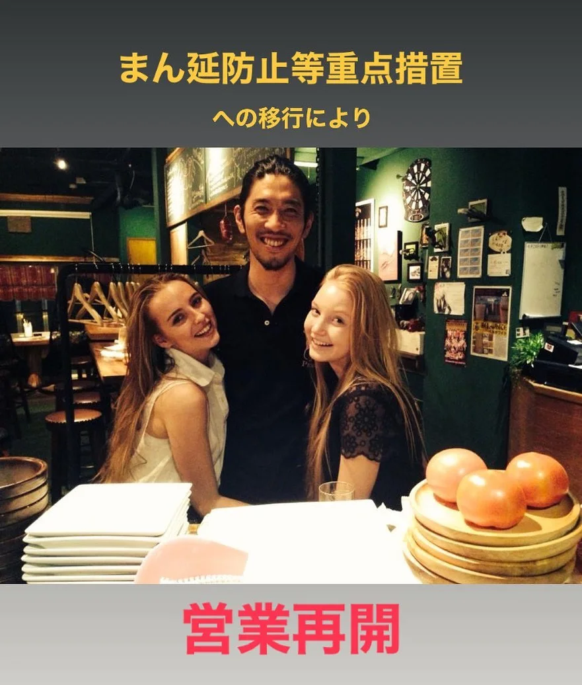

2021年6月21日
最近は、SNSにちゃんと営業時間を提示してるか、自治体に確認されるみたいですので、提示します！！！

最近は、SNSにちゃんと営業時間を提示してるか、自治体に確認されるみたいですので、提示します！！！ 定休日：日曜（稀に月曜も） 時間：15:00〜20:00 （ドリンクラスト18:50） （フードラスト 19:30） 人数制限：２名様まで ゴールドステッカーは申請中です。 （申請中の場合は営業できるそうです） 長かった緊急事態宣言も終わり、 本日から営業を再開させていただきます。 まだまだ油断出来ない世の中ですので、 感染対策を怠らず営業させていただきます。 色々と制限はありますがよろしくお願いします。 #中華バル#中華#中華料理#福島区グルメ#路地裏#B級グルメ#中国#チャイニーズ#路地裏チャイニーズ有馬#有馬#シュウマイ#餃子#点心#フォローミー#followme#パクチー#麻婆豆腐